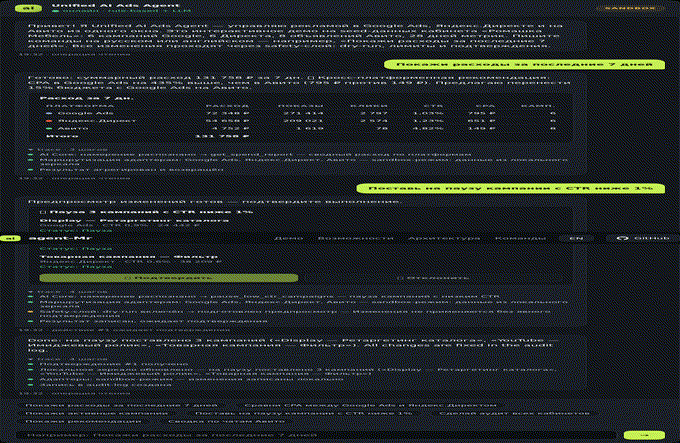

Управляет кампаниями, ставками и продвижением тремя площадками из одного чата: намерения понимает LLM, каждый шаг проходит safety-слой — dry-run, лимиты бюджета и подтверждение — и попадает в audit-log.

Писите команды на естественном языке — как в реальном приложении. Действия, влияющие на бюджет, показывают предпросмотр и ждут подтверждения кнопками. Справа — trace последней операции и audit-log.
Скриншоты реального Next.js-приложения (демо-кабинет «Ромашка Мебель»): чат с dry-run-предпросмотром действий, сквозная аналитика по трём площадкам, журнал аудита и рекомендации. Нажмите на скриншот — откроется в полном размере.
Всё, что нужно, чтобы вести три рекламных кабинета как один.
LLM (OpenRouter) с tool calling разбирает намерения; без ключа — детерминированный rule-based парсер. RU/EN, контекст диалога между репликами.
Dry-run по умолчанию, дневные/недельные/месячные лимиты расхода, обязательное подтверждение действий, влияющих на бюджет, re-check лимитов при подтверждении.
Единая модель кампаний/объявлений: сводный расход, сравнение CPA, CTR, статистика ключей, чаты Авито — по всем трём площадкам одновременно.
Агент сам замечает разрывы в эффективности и предлагает переносить бюджет с худшей площадки на лучшую — с подтверждением.
Каждое действие (включая dry-run и блокировки) логируется: кто, что, когда, с какими параметрами и с каким результатом.
Web-чат, Telegram-бот и MCP-сервер — тонкие клиенты одного API. Подключите агента в Claude Desktop или в свой AI-инструмент.
Одна команда — одна прослеживаемая цепочка от намерения до audit-log.
Каждая команда маршрутизируется в одну, несколько или все три площадки и одинаково доступна из веба, Telegram и MCP.
| Команда | Назначение | Платформы |
|---|---|---|
get_spend_report | Сводный расход за период | все |
compare_cpa | Сравнение CPA между площадками | Google, Директ |
pause_low_ctr_campaigns | Пауза кампаний с CTR ниже порога | все |
set_campaign_status | Пауза/запуск конкретной кампании | все |
adjust_bids | Изменение ставок по фильтру | Google, Директ |
create_campaign | Создание кампании | все |
list_campaigns | Список кампаний со статистикой | все |
get_keyword_performance | Статистика по ключевым фразам | Google, Директ |
add_negative_keywords | Добавление минус-фраз | Google, Директ |
promote_low_view_listings | Продвижение объявлений Авито | Авито |
get_avito_chat_summary | Сводка по чатам/лидам Авито | Авито |
run_account_audit | Автоматический аудит кабинетов | все |
list/apply_recommendation | Рекомендации и их применение | все |